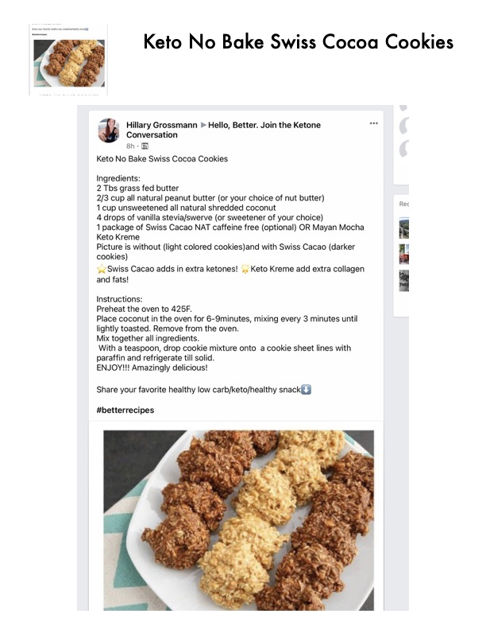

Keto No Bake Swiss Cocoa Cookies

Original cookbook page 107
Keto No Bake Swiss Cocoa Cookies
Cook: 6-9 minutes (for coconut toasting)
Ingredients
- 2 Tbs grass fed butter
- 2/3 cup all natural peanut butter (or your choice of nut butter)
- 1 cup unsweetened all natural shredded coconut
- 4 drops of vanilla stevia/swerve (or sweetener of your choice)
- 1 package of Swiss Cacao NAT caffeine free (optional) OR Mayan Mocha Keto Kreme
Instructions
- Preheat the oven to 425°F.
- Place coconut in the oven for 6-9 minutes, mixing every 3 minutes until lightly toasted. Remove from the oven.
- Mix together all ingredients.
- With a teaspoon, drop cookie mixture onto a cookie sheet lined with paraffin and refrigerate till solid.
- ENJOY!!! Amazingly delicious!
Recipe #107 from collection